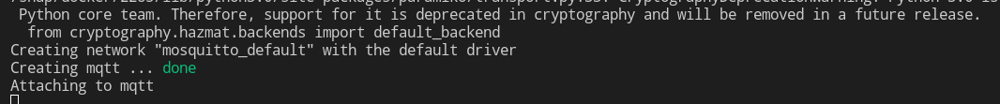

Objetivo
O objetivo dessa sessão é abordar as configurações necessárias para configurar um servidor mqtt no linux.Será necessário ter instalado o docker na máquina que for subir o servidor.
Nesse primeiro instante irei abordar como será feita a configuração do servidor sem o protocolo de segurança TLS, mais a frente abordarei como é feita a configuração com esse protocolo.
Iremos utilizar o broker denominado Eclipse Mosquitto que é um broker MQTT de software livre (licenciado por EPL/EDL).
Primeiro passo é criar uma pasta denominada mosquitto, dentro dessa pasta é necessário criar a seguinte estrutura:
.
|-- config
| `-- mosquitto.conf
|-- data
|-- docker-compose.yml
`-- log
`-- mosquitto.log
3 directories, 3 files
Primeiro iremos configurar o arquivo de configuração do broker do seguinte modo.
allow_anonymous true
listener 1883
persistence_location /mosquitto/data/
log_dest file /mosquitto/log/mosquitto.log
A configuração allow_anonymous determina se os clientes que se conectam sem fornecer um nome de usuário têm permissão para se conectar.
A configuração listener determina qual porta o broker irá escutar, nesse caso iremos configurar a porta padrão para comunicação sem protocolo de segurança.
Os outros 2 argumentos são referentes ao armazenamento e log.
Agora irei configurar o arquivo de configuração do docker compose, não irei entrar em detalhes nessas configurações.
version: "3.7" #versão do docker
services: # Docker Compose trata todos os contêineres que desejamos executar como serviços
mqtt: #nome do nosso serviço.
container_name: mqtt
image: eclipse-mosquitto #O nome da imagem utilizada para a construção do contêiner.
restart: always
volumes: #Diretorios do host compartilhadas com container
- ./config:/mosquitto/config
- ./data:/mosquitto/data
- ./log:/mosquitto/log
ports: #é utilizada para informar a porta do sistema hospedeiro que receberá as
- 1883:1883 #requisições e para qual porta deve encaminhar estas requisições para dentro do contêiner
Após essas configurações será necessário rodar o seguinte comando no mesmo diretório que o arquivo docker-compose.yml está salvo.
Se tudo ocorrer conforme o esperado o servidor já vai estar funcionando. Abaixo segue uma imagem ápos utilizar o ultimo comando explicado acima.
